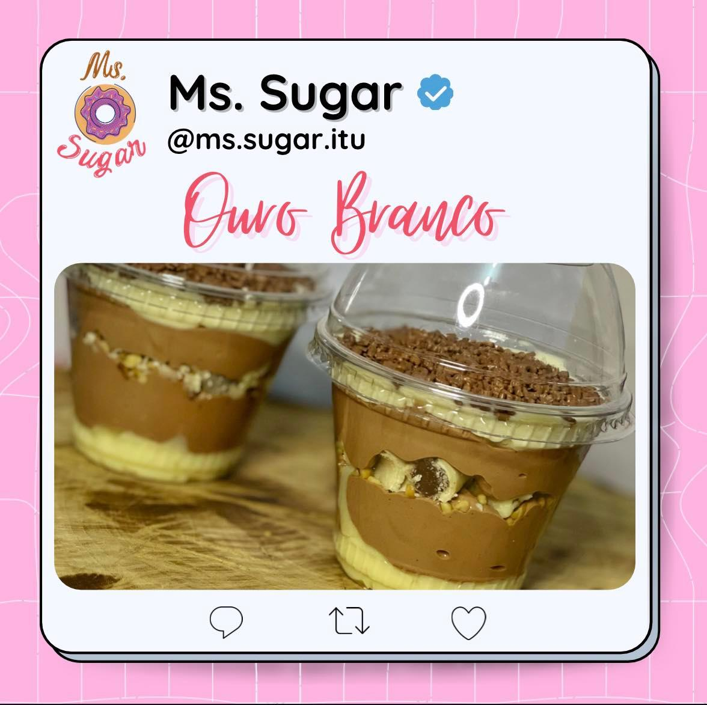

Sobre a loja
A Ms. Sugar conta com duas idealizadoras desse projeto “agridoce”; Chefe de cozinha, formada em Gastronomia e pós-graduanda em duas áreas: Gastronomia Vegetariana e Gastronomia Funcional e Natural. Atuou há tempos em sua primeira graduação, como Contadora, mas nunca conseguiu esconder sua paixão pela cozinha. Com isso, começou a sua carreira profissional fazendo o que mais ama, totalizando 8 anos de uma vasta experiência em doces, bolos e salgados em um estabelecimento muito renomado. Percebeu que poderia voar mais alto e alcançar muito de seus objetivos, decidiu empreender em seu próprio negócio!
Sua segunda idealizadora é uma ex graduanda em Serviço Social, atualmente estudante no curso de Publicidade e Propaganda. Sua carreira profissional sempre foi uma incógnita. Grande experiência em atendimento ao público presencial e digital, também como auxiliar de confeitaria; paixão por literatura, tecnologia e música, achou que construiria sua carreira a base de seu cargo público, mas novamente se equivocou. Determinada a mudar seu futuro, dispôs a juntar o útil com o agradável. Sendo assim, tirando o projeto do papel com sua parceira, criando a Ms. Sugar!
Alguns de nossos doces!
- 
Um delicioso copo
composto por mousse de
chocolate, trufa de chocolate
meio amargo e pedaços
de chocolate 40% cacau.
Um delicioso copo
composto por mousse ao
leite, trufa crocante
e pedaços do chocolate
Sonho de Valsa.
Um delicioso copo
composto por trufa branca,
mousse crocante,
pedaços de chocolate
Ouro Branco.
Um delicioso copo
composto por trufa ao leite,
brigadeiro de limão e
pedaços de chocolate
Trento sabor Limão.
Contate-nos
-
 Siga nosso Instagram
Siga nosso Instagram
- Rua Professora Maria Rosa D'Elboux Bortolotti - nº547 São Luiz - Itu/SP
-
 (11)97177-8160
(11)97177-8160